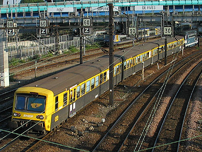
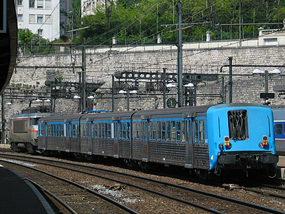
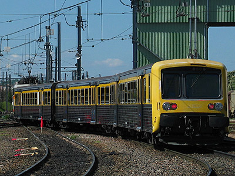
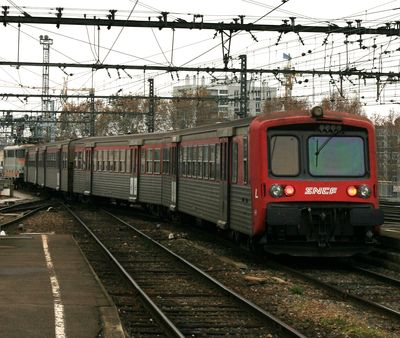
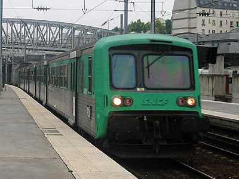
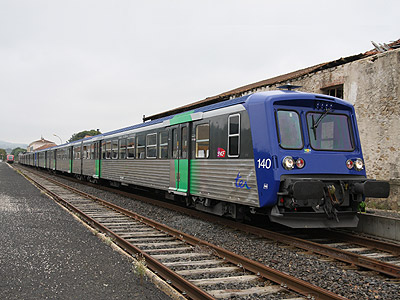
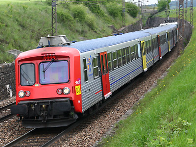

RRR : Rames Régionales Réversibles
Les RRR sont des voitures destinées aux transports régionaux, construites entre 1985 et 1994. Elles sont largement issues des RIB et RIO (Rames Inox Omnibus) conçues dans les années 1950, et dont elles sont généralement considérées comme une version modernisée.
Elles partagent avec ces dernières les points communs suivants :
La construction en Acier inoxydable selon le procédé de soudure Budd, un gabarit réduit avec plancher surbaissé. Elles forment des éléments indéformables de trois ou quatre voitures attelées par barre. A une extrémité, une cabine de conduite permet de piloter une
locomotive en réversibilité. Deux éléments attelés dans le même sens peuvent être tirés/poussés par la locomotive.
Comme les derniers programmes de construction des RIO, les RRR sont équipées de bogies Y 34 leur permettant une vitesse maximale de 140 km/h et le pupître
de conduite possède des commandes mixtes compatibles avec une locomotive électrique bicourant ou une locomotive Diesel.
En revanche, les RRR présentent des différences notables. La structure de caisse est différente avec les portes d'accès coulissant à l'extérieur.
Les extrémités sont équipées de boucliers de chocs, recouverts par des masques en matériau composite fibre de verre / polyester leur donnant un aspect nettement plus moderne.
Contrairement aux RIB et RIO qui avaient été conçues pour desservir des zones denses, les RRR sont aménagées pour des trajets plus longs et moins chargés.
Ainsi, chaque voiture ne possède que deux plateformes d'accès, et le confort est plus soigné, notamment l'isolation phonique et thermique.
A l'origine, les RRR furent proposées en deux niveaux de confort et de capacité en fonction de leur usage. Les segments de RRR Périurbaines, destinés à la
desserte de la proche banlieue de grandes villes possédaient des sièges en vis à vis avec un pas de 1540 mm, guère plus confortable que les 1500 mm des RIO.
Les segments de RRR Régionales possédaient des sièges en enfilade avec un pas de siège plus généreux de 815 à 860 mm et quelques sièges en vis à vis avec un
pas de 1660 à 1785 mm. En revanche la capacité des rames Régionales chutait de 287 à 255 places et 20 strapontins pour un segment à trois caisses BDx + Bz + AB.
Ces aménagements ont été revus lors de la modernisation des RRR par les conseils régionaux.
Les RRR sont compatibles avec des locomotives électriques (BB 9600, BB 16500, BB 8500, BB 25500, BB 22200 RC) ou Diesel (BB 66400 , BB 67300, BB 67400).
Les BB 17000 et 20200, bien que compatibles, n'ont en principe pas été utilisées en service commercial avec les RRR.
Effectifs et diagrammes
Les livraisons des RRR se sont étalées entre 1985 à 1990 puis de 1992 à 1994 :
1985 : 3,
1986 : 90,
1987 : 121,
1988 : 95,
1989 : 42,
1990 : 30,
1992 : 22,
1993 : 23,
1994 : 8.
Soit un total de 434 caisses formant
139 éléments (139 BDxw pilote, 139 AB d'extrémité équipées de câblots de réversibilité, 96 Bz intermédiaires, 60 ABz intermédiaires).
Ces rames ont pu être commandées et financées par les régions (41 éléments dont 9 à quatre caisses) ou par la SNCF (98 éléments dont 8 à quatre caisses).
Quelques données techniques
Constructeur : Carel-Fouché
Vitesse maximum autorisée : 140 km/h
Longueur : 25,709 m pour les BDx et AB - 24,050 m pour les Bz et ABz intermédiaires
Largeur de la caisse : 2,800 m
Hauteur au-dessus du rail : 3,358 m
Hauteur du plancher : 0,958 m
Tare : 28t (Bz, ABz), 29t (AB), 32t (BDx)
Bogies : Y 34 A et A1 (roues de 800 mm de diamètre, empattement de 2,500 m)
Pour plus d'info :
- Bibliographie
Encyclopédie des voitures de la SNCF (2nde édition juin 2006) - Alain Rambaud / Jean-Marc Dupuy / Georges Mathieu - éditions La vie du rail - ISBN 2-915034-24-9
Le matériel remorqué voyageurs de la SNCF (édition 2000) - Georges Mathieu - éditions La vie du rail - ISBN 2-902 808-92-5
Le matériel remorqué voyageurs de la SNCF (édition 2008) - Denis Redoutey - éditions La vie du rail - ISBN 978-2-915034-96-7
Ferrovissime n°61 Juin 2013 - Les portraits du rail : les RRR
- Ailleurs sur le Web
La fiche RRR
sur Wikipedia.
Les RRR sur Trains-Europe.
Le forum Les trains de l'Histoire (inscription obligatoire pour lire les sujets) compte deux fils de discussion sur les RRR :
Petite histoire des RRR et RIO rhône-alpines
la petite histoire des RRR

RRR Nord Pas-de-Calais arrivant à Lille Flandres (19/09/2003)

Cette RRR Franche-Comté est exceptionnellement acheminée
par une locomotive non-réversible (Dijon, 16/05/2004)

RRR Bourgogne assurant la navette pour les JPO de Dijon-Perrigny (16/05/2004)

La RRR 'L' Rhône Alpes quitte Lyon derrière une BB 9600 (04/12/2004)

RRR Picarde en gare de Paris-Nord (28/08/2002)

Deux coupons de RRR Auvergne modernisés assurent le train des
gorges de l'Allier (Langogne, 25/09/2008)

RRR Bourgogne modernisés avec climatisation de la cabine
de conduite (Mâlain, 14/05/2010)